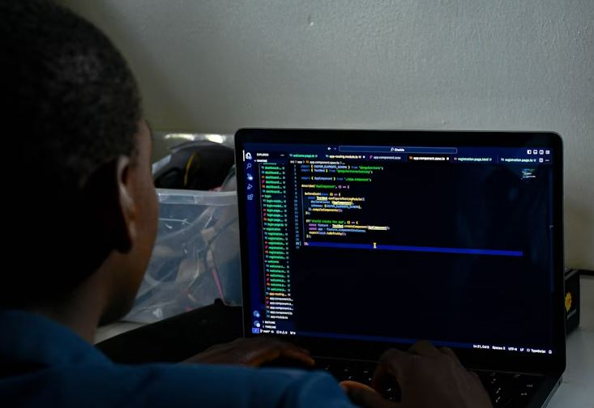

PROGRAMMING
Programming overview
Programming means writing, testing, and debugging code to create software,
apps, or systems—solving problems by translating logic into a language
computers understand.

Basic programming languages every beginner in IT should consider learning,
especially for a strong foundation:
- HTML : The standard language for creating web pages (structure).
- CSS : Used to style and layout web pages.
- JavaScript : Adds interactivity to websites; essential for front-end development.
- Python : Easy to read and versatile; great for web, data science, automation, and AI.
- SQL : Used for managing and querying data in databases.
- Java : Widely used in enterprise applications and Android development.
- C : A foundational language that helps understand how software interacts with hardware.
- C++ : Builds on C, used in game development, system/software engineering.
- PHP : Often used in server-side web development.
- Bash/Shell scripting : Useful for automating tasks in Linux/Unix systems.
App Brewery (London), offers hands‑on bootcamps in iOS, Android,
web development, UI/UX design, and more.
Located at 69–89 Mile End Road, London, E1 4TT, UK